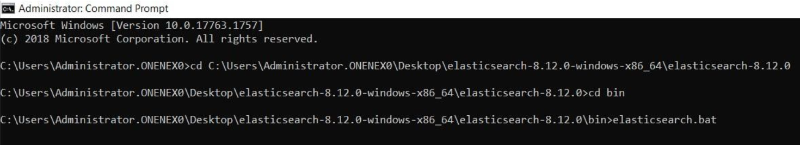
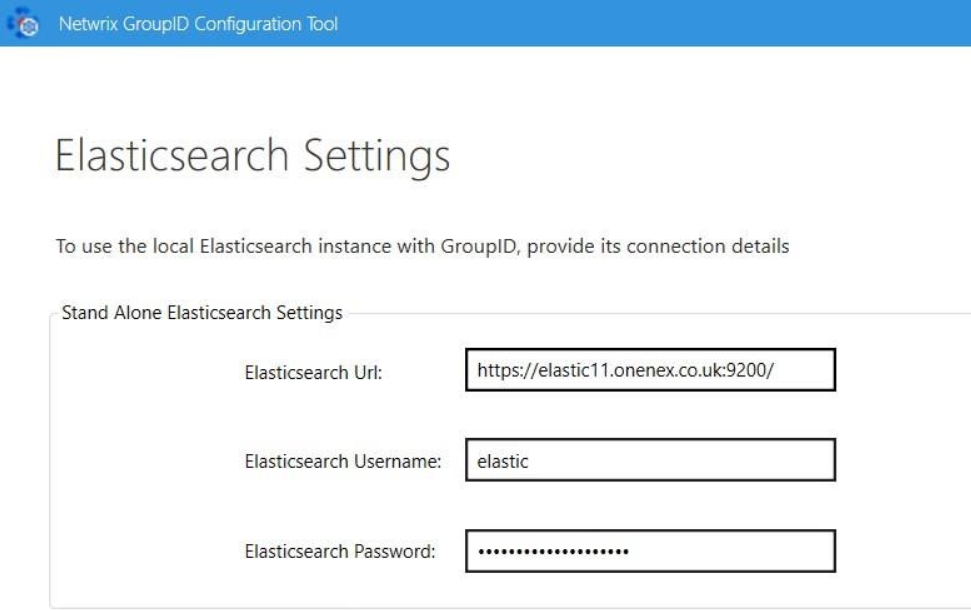

Applies To
Directory Manager 11
Question
Is it possible to manage the Elastic repository on a separate instance in Netwrix Directory Manager (formerly GroupID) 11?
Answer
Yes, this is possible. To improve performance and manageability, you can install and configure Elasticsearch on a separate machine for use with Directory Manager 11. Follow the steps below to complete the setup.
Prerequisites
-
Ensure that Java 11 or higher is installed. You can verify this by
running
java -versionin Command Prompt (CMD). - If you're installing Elasticsearch version 8.12 or later, Java installation is not required.
- Install a separate box for Elasticsearch for elastic repository management.
Instructions
- Install Elasticsearch on a separate machine by downloading the latest version from the official website.
- Extract the package and open CMD.
-
Navigate to the
bindirectory and runelasticsearch.bat.  -
Take note of the username and password provided upon
successful installation. You may keep the password provided, but if you would like to
reset the password, run the command below:
bin/elasticsearch-reset-password -u elastic - Access Elasticsearch via browser to confirm it is running.
NOTE: If you run
elasticsearch.batin CMD without installing it as a service, Elasticsearch will stop running when the CMD window is closed. To keep it running independently, follow the next steps to install Elasticsearch as a Windows service.
-
To install Elasticsearch as a Windows service, run
elasticsearch-service.bat installin CMD. Let the installation complete. -
Open
services.msc, find elasticsearch-service-x64, set Startup Type to Automatic, and start the service. - Verify Elasticsearch is running by navigating to the service URL in your browser.
- On the Directory Manager server, open the Netwrix Directory Manager Configuration Tool. When prompted, select I will install and manage Elastic myself.
- Enter the URL and credentials for the separate Elasticsearch machine. 
- Complete the remaining configuration steps to finalize the setup.
Once completed, Directory Manager 11 will be successfully configured to use an external Elasticsearch instance for its repository.